Volunteer & Activities
彰化遠哲科學營
大學期間，我連續四次參與彰化遠哲科學營，並加入「特殊生組」， 協助視障與聽障學生參與科學課程與實作活動。由於學員的年齡層與學習需求不同， 課程設計不能只依賴一般講述或視覺教材，而是需要根據學生狀況調整說明方式， 讓他們能真正參與課程。
在營隊籌備與執行過程中，我們與物理、化學、數學及特殊教育等不同領域的師長與團隊合作， 將部分視覺化實驗結果轉換為可觸摸的模型，或透過聲音、震動、步驟拆解與一對一陪伴， 協助學生理解抽象的科學概念。
其中一次營隊中，我擔任機動長，負責協助人力調度、突發狀況處理、物資分配， 以及支援各組與學員互動時遇到的問題。這個角色讓我更理解團隊協調與現場判斷的重要性。
參與梯次
2020 遠哲彰化科學夏令營
初次參與彰化遠哲科學營，協助特殊生組學員參與科學課程與實作活動， 學習如何依照視障、聽障學生的需求，調整說明方式與活動節奏。
2021 遠哲彰化科學冬令營
延續特殊生組服務經驗，協助課程進行、學員陪伴與活動支援， 並在實作過程中強化與不同背景成員的溝通、合作與臨場應變能力。
2022 遠哲彰化科學夏令營
參與營隊籌備與現場執行，協助學員理解實驗步驟與完成操作流程， 並支援團隊處理課程與活動執行時的即時需求。
2022 遠哲彰化科學冬令營
協助人力調度、物資分配與突發狀況處理，支援各組與學員互動時遇到的問題， 累積活動管理、現場判斷與團隊協調經驗。
活動紀錄
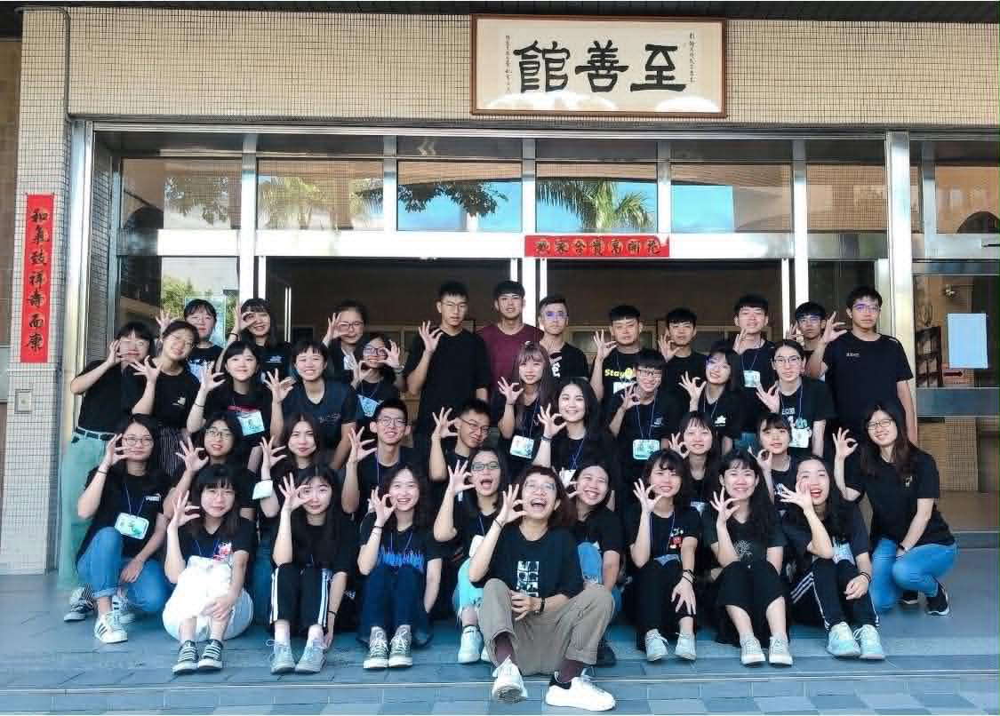
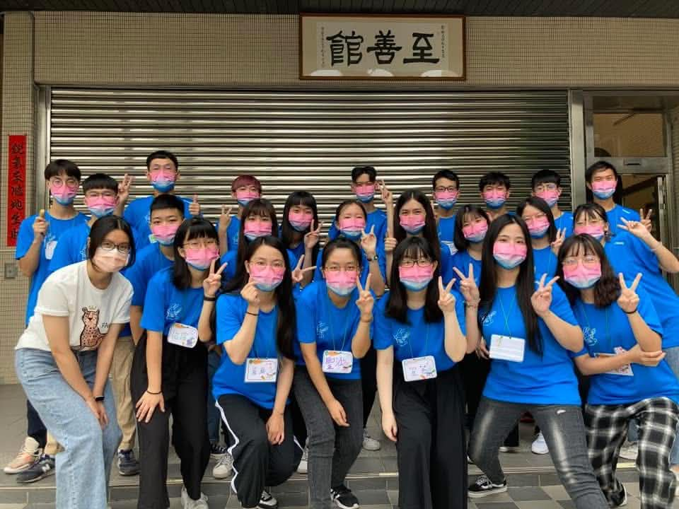
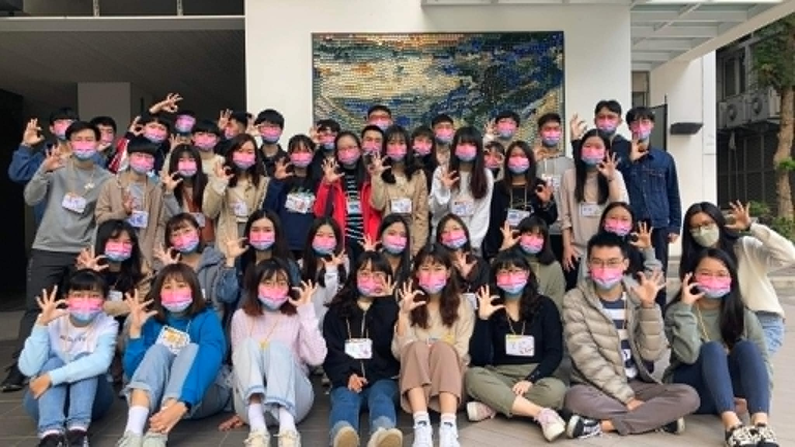
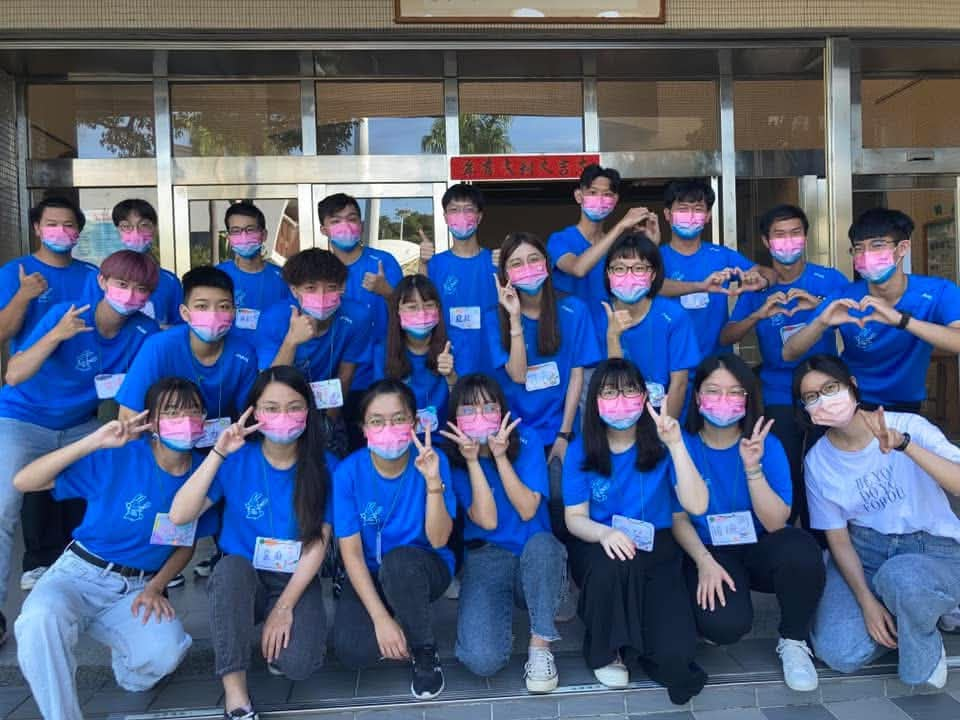
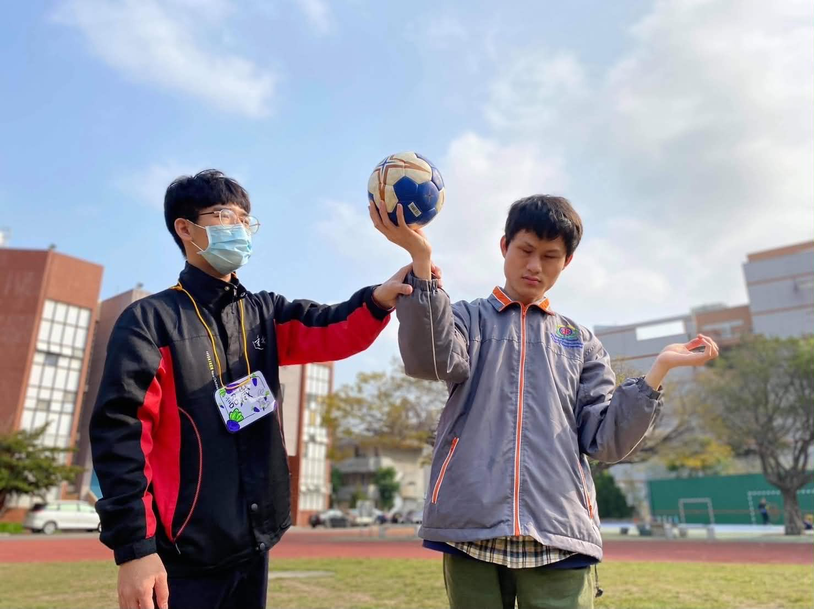
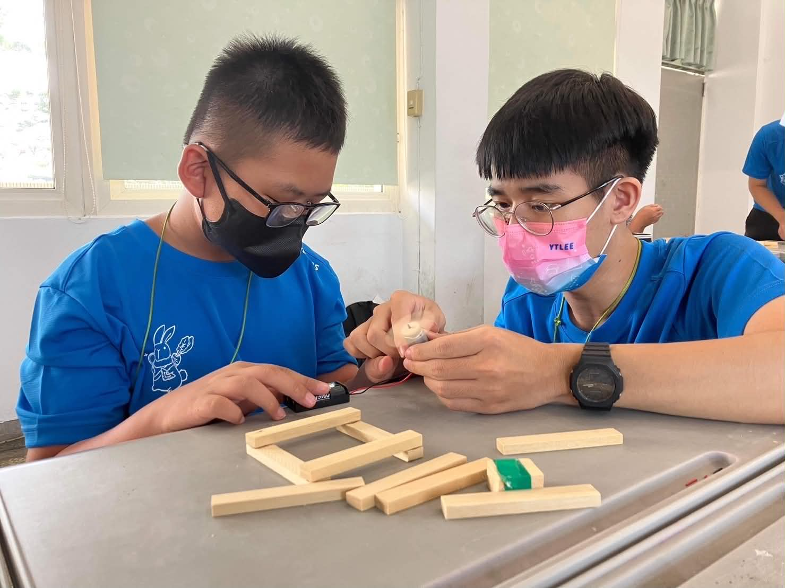
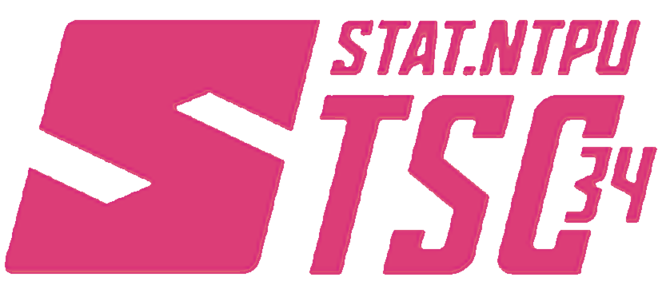
南區統計研討會
研究所期間，我參與南區統計研討會，透過研討會了解不同學校與研究團隊在統計方法、 資料分析、機器學習與應用研究上的主題與成果。這段經驗讓我接觸到更多元的統計研究方向， 也幫助我理解統計方法如何應用於不同領域的實務問題。
在研討會過程中，我觀察不同研究者如何進行研究問題設定、資料處理、模型建構與結果解釋， 並學習如何以更有系統的方式整理研究動機、方法流程與分析結果。這對我後續進行碩士論文研究、 撰寫研究內容與準備簡報報告皆有幫助。
此外，研討會也提供與其他統計背景學生及研究者交流的機會，使我更熟悉學術報告的呈現方式， 並提升我對統計分析、研究設計與資料解釋的理解。
活動紀錄
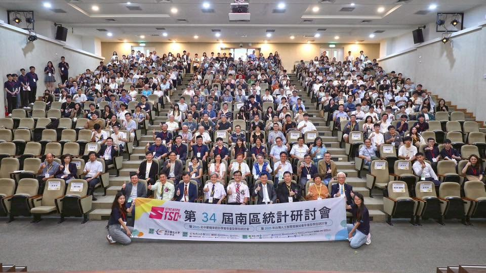
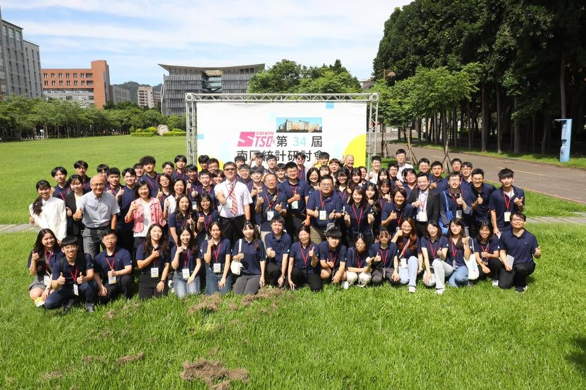
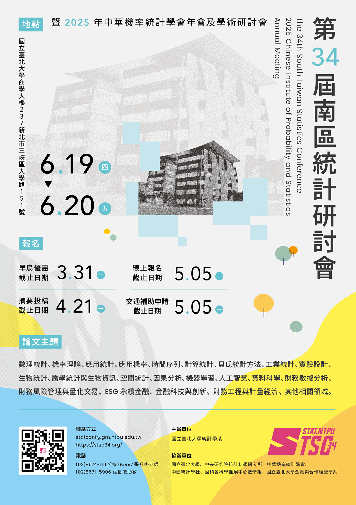
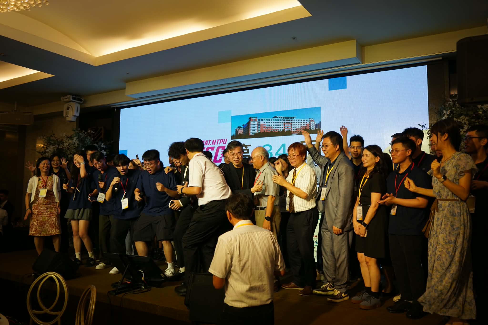
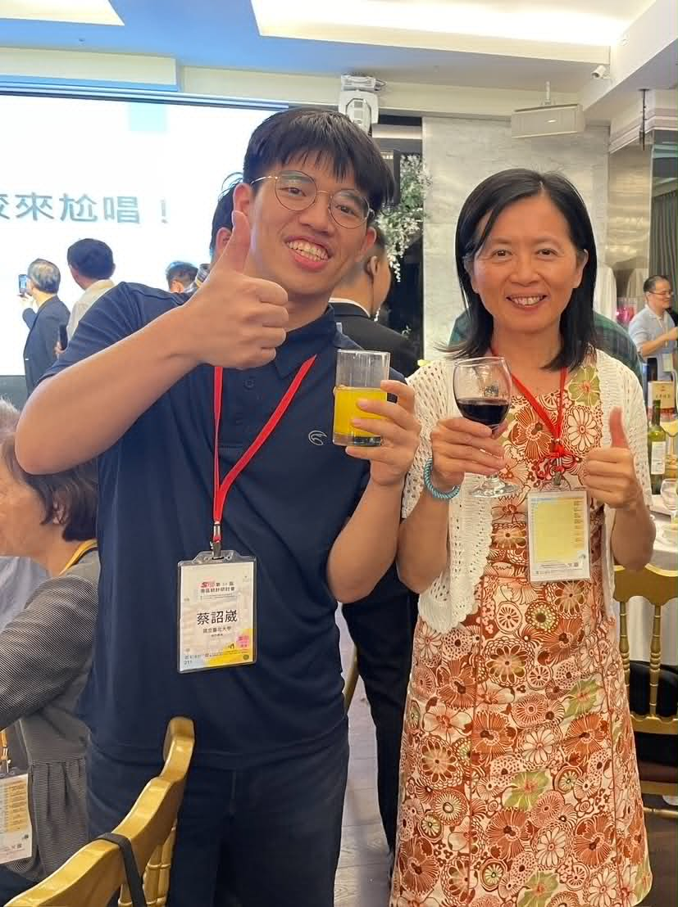